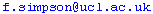

Our research group
(N.B. To deter spam harvesting, email
addresses are often unclickable images. Just type them in instead.)
- Blanca
Huertas (Curator
in Entomology, The Natural History Museum; part-time PhD student, UCL).
b.huertas@nhm.ac.uk
- Dmytro Kryvokhyzha
(MSc/PhD Student, Uppsala Universitet). dmytro.kryvokhyzha@evobio.eu
- Dr.
James Mallet (Professor of Biological Diversity).

Former group members
- Dr. Margarita Beltrán (teacher; her
most difficult projects yet -- Catalina and Manuela, as well as Chris).
- Dr. Martin Brookes (now a science writer).
- Dr. Vanessa Bull (now a forensic scientist).
- Dr. Sarah Darwin (botanist who worked on Solanum
in the Galapagos, now in Berlin). sarahdarwin@hotmail.com
- Dr.
Kanchon Dasmahapatra (since 2012 a lecturer at University of York).
kanchon.dasmahapatra@york.ac.uk
- Dr. Michele Drès (married name Michele
Hingle; went to a postdoc at Cardiff University, then an administrator at
UCL Medical School).
- Dr.
Igor Emelianov (now at Rothamsted Research, Harpenden).

- Dr. Stéphanie Gallusser (currently a
conservationist in Tarapoto, Peru).
- Dr. Sebastien Gourbiere (lecturer, Université
de Perpignan). gourbiere@univ-perp.fr
- Dr.
Chris Jiggins (Royal Society University Research Fellow, Univ. Cambridge).
cj107@cam.ac.uk
- Dr.
Mathieu Joron (Departement Systématique
et Evolution, Muséum National d'Histoire Naturelle, Paris).
joron@mnhn.fr
- Lisa Leadbeater (Oleria, Ithomiinae).
l.leadbeater@ucl.ac.uk
- Dr.
Jesús Mavárez (CNRS-Université Joseph Fourier, Grenoble,
France). mavarez@gmail.com
- Dr.
W. Owen McMillan (Dean of Academic Programs, STRI, Panama).
mcmillano@si.edu
- Dr.
Russell Naisbit (now a postdoc at the Université de Fribourg).
russell.naisbit@unifr.ch
- Dr. Owen Rose (now a business training consultant
in Cambridge).
- Neil
Rosser (now a postdoc with Kanchon Dasmahapatra in York).
neil.rosser@ucl.ac.uk
- Fraser
Simpson (technician, bird photographer extraordinaire). 
- Dr. Alaine Whinnett (now Alaine Nabarro, teacher).
alaine.nabarro@hotmail.com
- Dr.
Keith Willmott (Assistant Curator, Florida Museum of Natural History,
University of Florida). kwillmott@flmnh.ufl.edu
- Dr. Ian Wynne (went on to a postdoc at the University
of Copenhagen -- WHERE ARE YOU? Please contact Jim!).
- Dr.
Marie Zimmermann (Maitre de Conferences, Université François
Rabelais, Tours). marie.zimmermann@univ-tours.fr
Other collaborations
- Dr.
Biff Bermingham, Director, Smithsonian Tropical Research Institute (STRI),
Panama.

- Dr.
Gerardo Lamas, Museo de Historia Natural, Universidad Mayor de San Marcos,
Lima.
- Dr.
Mauricio Linares, Dean of the Faculty of Natural Sciences, Universidad
del Rosario, Bogotá.
- Prof.
Ziheng Yang, Department of Biology, UCL.
Research
themes
Back
to J. Mallet home page